Table of Contents:
- Performer Setup
- Connecting Your Gloves to Hand Engine
- Exporting and Importing a calibration
- Express Calibration
- Advanced Calibration - Pose Capture
- Creating Custom Poses
IMPORTANT:
Hand Engine 2 is not compatible with the Studio gloves, please use Hand Engine 3 or later.
1. Performer Setup
Create a performer:
Hand Engine has the ability to create and store calibration for multiple performers. Before connecting gloves, you will need to create and stage a new performer.
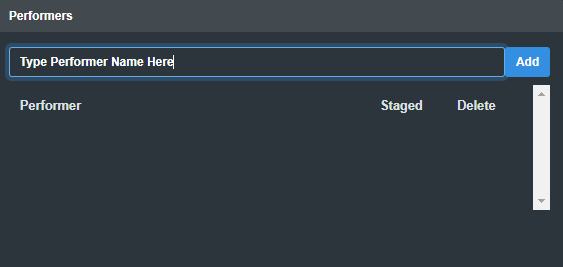
- At the bottom left-hand side of Hand Engine, please enter a new performer name and click on Add.
- The performer will be created and automatically staged.
Stage an existing performer
If a performer is already staged, the check box next to that performer's name will be ticked. To stage a performer, please select the check box next to that performer.
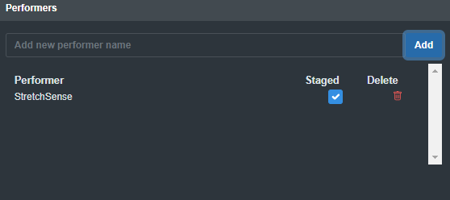
Unstage a Performer
To unstage a performer, please de-select the check box next to that performer. You can select this box to bring the performer back to the stage.
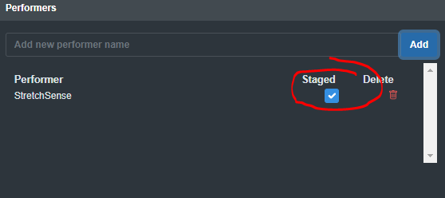
2. Connecting Your Gloves to Hand Engine
In this section you will find the three methods for connecting your gloves to Hand Engine:
- USB Bluetooth Dongle Connection
- Wired USB Connection
- WiFi Bridge App Connection
Pre-requisite: Please stage a performer first to allow gloves to be connected/associated with that performer.
To connect to your gloves, please stage a performer, and next to the associated hand (Left or Right), click on the drop-down box to select the connection mode:
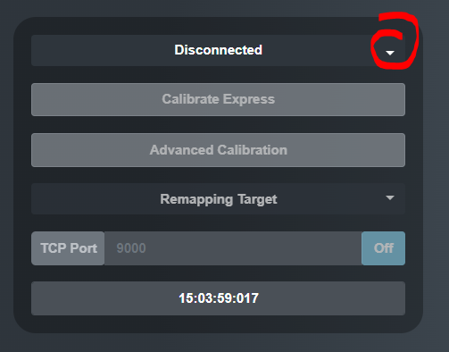
USB Bluetooth Dongle Connection
Please select the associated com port for your USB Bluetooth dongle and Hand Engine will connect the hand to that dongle. (Make sure your glove is turned on for data to stream)
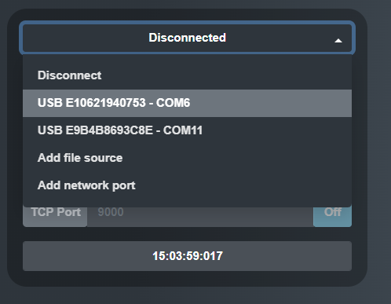
Wired USB Connection
Please follow these instructions for connecting gloves in a wired configuration.
- Please follow the below steps depending on glove type:
- For SuperSplay: Please make sure the switch on your glove electronics module is set to "D" (Data), then power the glove on by momentarily pressing the power button.
- For Fidelity: Power the glove on by momentarily pressing the power button.
- Plug the micro USB cable into your glove, and into your PC.
- Power the glove on, and then press the power button once momentarily. The LED light on the glove will change to a quick flashing green.
- In the Hand Engine connection dropdown, select the correct USB connection to connect the glove:
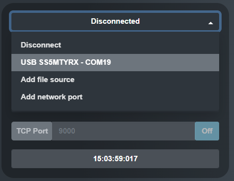
WiFi Bridge App Connection
You can download the StretchSense Wifi Bridge application here:
https://www.dropbox.com/scl/fi/q3urywucjolarofegkm2i/StretchSense-WiFi-App-v1.19.zip?rlkey=zzxj9279zr9vnfmvwbj45zejc&dl=0
Pair your gloves with the app and take note of the port numbers in use. The port numbers start from 9000 and increment for each additional glove connected. (Glove 1: Port 9000, Glove 2: Port 9001)
NOTE: Make sure to unplug all USB dongles before attempting the pairing with the WiFi app.
Please select Add network port and enter the port number the associated glove is set to on the WiFi bridge application.
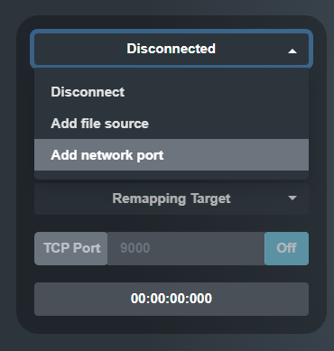
NOTE: The default port starts from 9000 for the first glove and increments (i.e. Glove 1: 9000, Glove 2: 9001)
Once you have entered the correct port number, please click on Submit to connect.
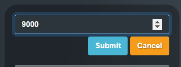
3. Exporting and Importing Calibration
Hand Engine 2.0 has the ability to export and import calibrations for your performers. This can be very useful if moving between machines, or if you wish to keep a backup of your calibration.
Calibrations are saved as a .json file.
Exporting a Calibration:
- Make sure a glove is connected and a calibration has been completed
- Focus Performer and click on Advanced Calibration
- Within the Hand Training tab, please click Export Calibration button
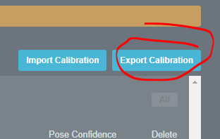
- Give your calibration file a name and save it somewhere convenient.
Importing a Calibration
- Make sure a glove is connected and calibration has been completed (See Express Calibration and Advanced Calibration)
- Focus Performer and click on Advanced Calibration
- Within the Hand Training tab, please click Import Calibration button
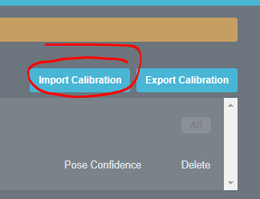
- Navigate to where your calibration files are saved and open the calibration file you require.
- Once the calibration has loaded all the poses, please select the poses you wish to use for calibration (Blend or Pose), or turn "Include Express Calibration" and click the Train button.
Calibration Files containing Express Calibration Only:
When importing a calibration that only contains Express Calibration (and no captured poses), you will need to capture a single pose (any pose) before you can click the Train button. You can then deselect this pose from the Blend column and click Train a second time to return to your imported Express Calibration only.
4. Express Calibration
Please make sure you have staged a performer and connected your gloves to Hand Engine prior to performing a calibration.
- Make sure your glove is connected, the performer staged and data is coming through.
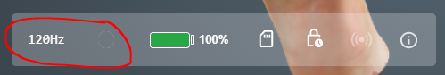
- Click on the Calibrate Express button
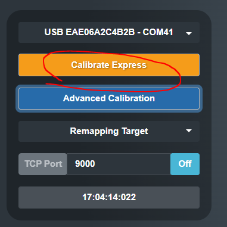
- Please move your fingers continuously to extreme positions.
- Once you have completed the Express Calibration, you can start recording or streaming right away! or try the Advanced Calibration method.
Tip: Changing Express Calibration Duration
While you will achieve amazing results with a 15-second calibration, you may wish to have a little more time to complete the process.
You can change the Express Calibration Duration in the Settings menu as shown below:
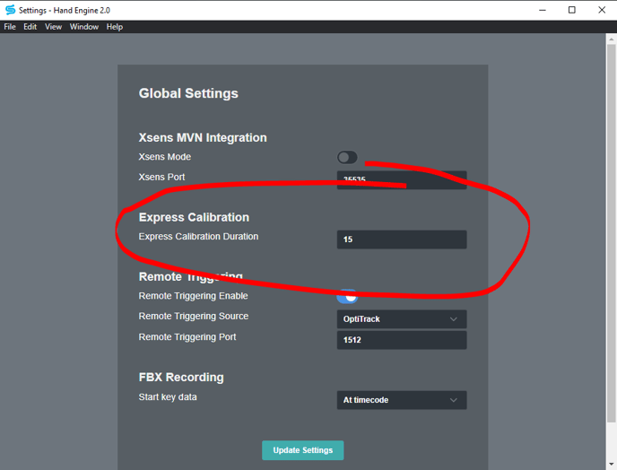
5. Advanced Calibration - Pose Capture
- Click on Advanced Calibration next to the performer's hand you wish to calibrate.
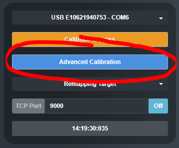
- The Advanced Calibration window will pop up.
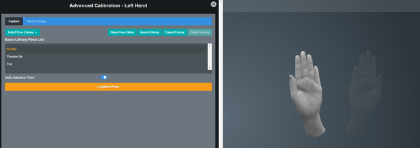
- Next, Select the pose library that contains the poses you wish to capture for your calibration
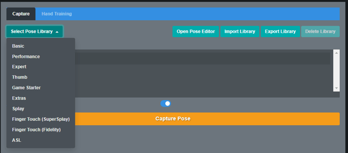
- Select the pose you wish to start with. The viewport hand as selected will change to the selected pose
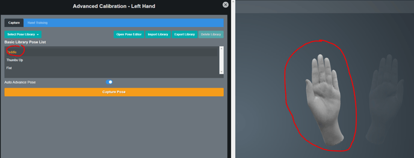
- Have the performer replicate their hand exactly as seen on the viewport hand shown to the side of the Advanced Calibration window.
- Have the performer rotate their wrist slightly whilst holding their hand in the correct pose
- While rotating the wrist and holding the pose, please click on the "Capture Hand" button.
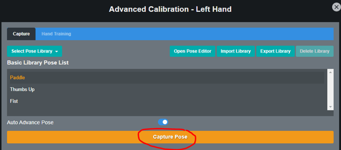
- The capture takes a couple of seconds, please maintain pose and wrist rotation until the button turns orange again.
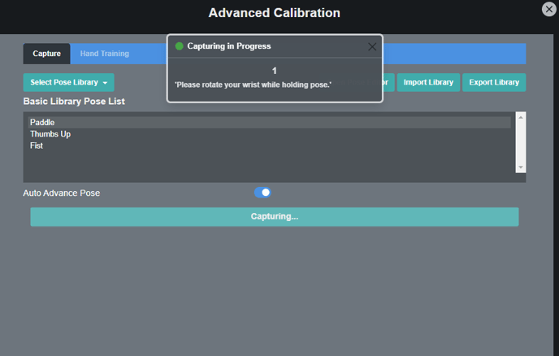
- If you have "Auto Advance Pose" Selected, the viewport hand will move to the next pose in the library automatically.
- Repeat steps 6 to 9 for each of the poses in the library as required.
If you have captured a pose incorrectly and wish to delete that pose. Please click on the Hand Training tab and click on the delete button next to the pose you wish to delete.
Tip: You can click and drag the viewport to rotate the hand. This makes getting a better view of the pose easier so you can replicate it exactly.
IMPORTANT!
- For best results, have the performer initially copy the reference pose with their hand with the wrist straight.
- It is very important to make sure all of the joints on the performer’s hand match the reference hand pose from the pose library, if the performer cannot achieve the pose, they shouldn't train that pose.
- Furthermore, it is highly beneficial to ensure that if a particular joint is in the same position in more than one pose, for each of these poses the corresponding joint on the performer’s hand is also in the same position.
- This provides higher-quality data to the hand solver that results in optimal calibration performance.
- Once the performer is set in the hand pose, ask them to hold the hand pose steady and hold their forearm steady while gently rotating at their wrist (e.g. like the wrist would move when using a skipping rope), and to keep rotating their wrist in this circular motion until the capture is complete.
- Start the capture process by clicking the Capture button. The capture process takes <2 seconds for each captured pose.
Captured poses settings
Hand Engine 2.0 has various options for working with the captured poses, making it an extremely flexible tool to achieve the results you require.
To access these options, please enter the Advanced Calibration section of Hand Engine 2.0 and click on the Hand Training tab at the top.
In this section, you will find all the settings required to make adjustments to your calibration.
- Express
- Blend Pose Mode
- Key Pose Mode
- Tuned Express
- Express with Key Pose
- Blend Pose with Key Pose
- Tuned Express with Key Pose
- Key Pose Settings
- Wrist Settings
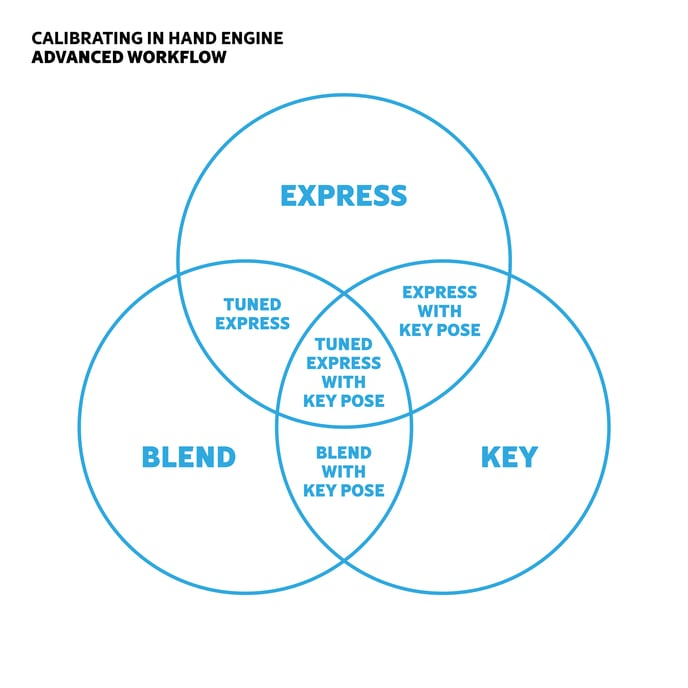
Express Mode
If you have performed an Express Calibration. Hand Engine 2 will default the hand output to using the express mode.
If you have used an Advanced Calibration training method such as Blend or Pose, and wish to go back to the Express output mode:
- Open the advanced Calibration Section
- Select the Hand Training tab
- Deselect any poses under the Blend or Pose columns
- Select the "Include Express Calibration" toggle
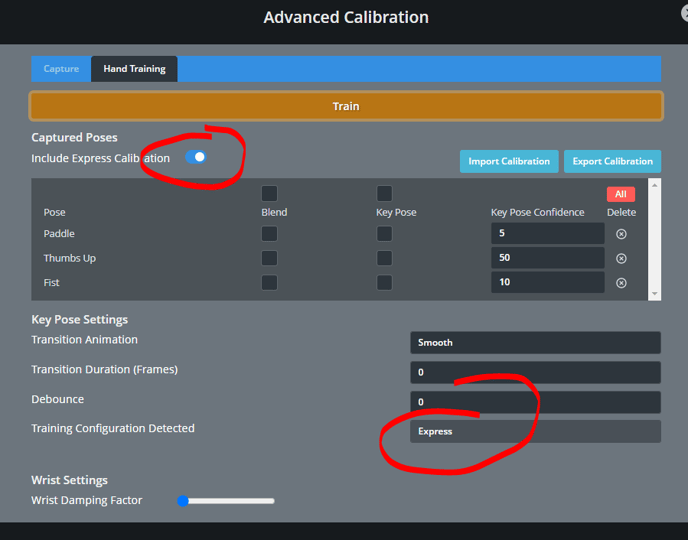
Click on "Train" to set the output to Express Mode
This switch will turn on or off any express calibration that you have done. If you wish to use a blend calibration (where Hand Engine will only use captured poses as its calibration source), please turn this switch off and see below for how to use the blend mode.
Blend Pose Mode
If Express mode is turned off, Selecting poses in the blend column will include these as part of the base calibration. Please add the poses you see fit to achieve the calibration quality you require.
- Open the advanced Calibration Section
- Select the Hand Training tab
- Ensure you have performed an Advanced Calibration and captured a set of poses.
- Turn "Use Express Mode" off
- Select the poses you have captured under the Blend column.
- Click on "Train" to set the output to use your captured poses as a Blend mode calibration.
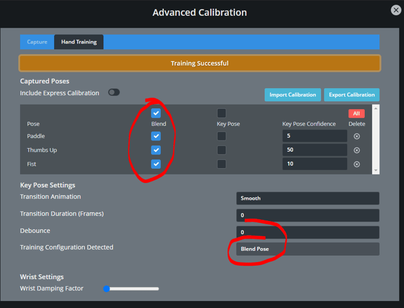
Key Pose Mode
By selecting one of the checkboxes under the Pose column, Hand Engine will be able to Key (or lock) to that pose.
If there are no Blend poses selected, and "Use Express Mode" is turned off, Hand Engine will only output the key poses you have selected under the pose column.
- Open the advanced Calibration Section
- Select the Hand Training tab
- Ensure you have performed an Advanced Calibration and captured a set of poses.
- Turn "Use Express Mode" off
- Deselect any poses that may be ticked under the Blend column.
- Select the poses you wish to pose mode under the pose column
- Refer to the Key Pose Settings section for further customization.
- Click on "Train" to set the output to use your captured poses as a Key mode calibration.
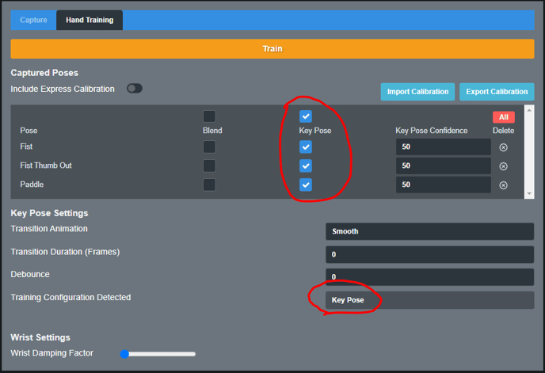
Tuned Express
Tuned Express is the combination of Express calibration with some blend poses to improve the overall accuracy of the express calibration.
- Perform an Express Calibration
- Open the Advanced Calibration section
- Capture poses you wish to use to improve upon the express calibration you have done
Before selecting poses, assess where the calibration needs improvement. A great way to do this is to check poses such as Paddle, Fist, and Thumbs up, and see if the accuracy of any of the fingers needs improving in these areas.
- Select the Hand Training Tab
- Make sure that "Include Express Calibration" is turned on
- Select the poses you wish to use for the tuned express under the Blend Pose column
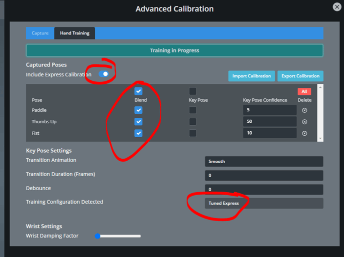
- Click on Train and assess your calibration.
Express with Key Pose
Express with Key Pose is the combination of express mode calibration and selecting key poses.
- Open the advanced Calibration Section
- Select the Hand Training tab
- Ensure you have performed an Advanced Calibration and captured a set of poses.
- Turn "Include Express Calibration" on
- Deselect any poses that may be ticked under the Blend column.
- Select the poses you wish to key under the pose column, and refer to the Key Pose Settings section for further customization.
- Click on 'Train' to apply the changes.
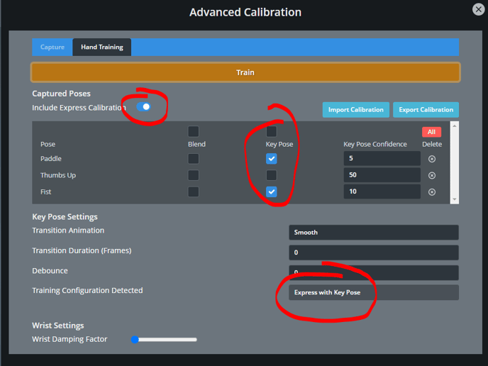
Important! - Selecting Key Poses
- Please select a minimum of two poses for this to operate correctly. The two poses need to be at opposite extremes of joint angle. You are able to set the key confidence of the opposing pose extremely low if you do not wish Hand Engine to key to that pose.
- Example: If wish to key to the Fist pose, I should select the Paddle pose and set the key confidence of the Paddle to 5. For the Fist pose, I would set the key confidence to 15 as I wish to key into this pose.
- Test the sensitivity of the key poses, and adjust the Key Confidence higher or lower depending on how strongly you wish to lock into these poses.
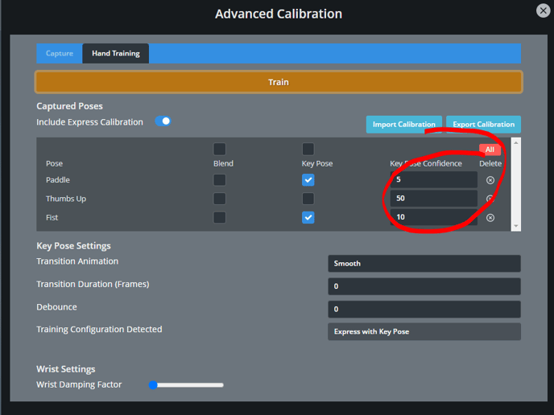
- If you have changed any key poses or key confidence, please click the Train button again to update the calibration.
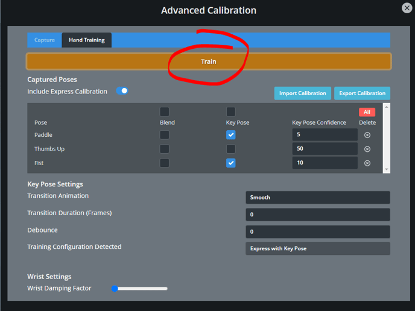
- All other hand motions besides the key poses will be based on the express calibration.
Blend Pose with Key Pose
Blend Pose with Key Pose is the combination of a blend base calibration and selecting key poses.
- Open the advanced Calibration Section
- Select the Hand Training tab
- Ensure you have performed an Advanced Calibration and captured a set of poses.
- Turn "Use Express Mode" off
- Select the poses you wish to use for the blend calibration under the blend column.
- Select the poses you wish to key under the pose column.
- Refer to the Key Pose Settings section for further customization.
- Click on 'Train' to apply your changes.
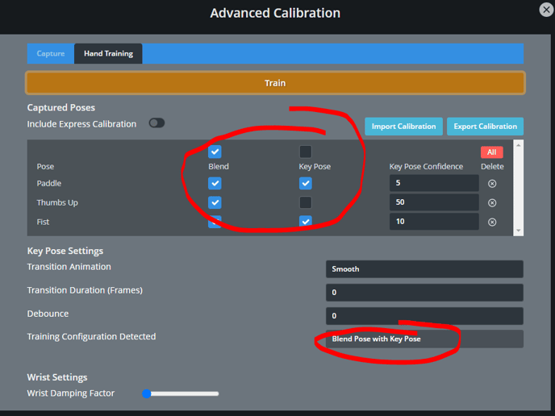
Important! - Selecting Key Poses
- Please select a minimum of two poses for this to operate correctly. The two poses need to be at opposite extremes of joint angle. You are able to set the key confidence of the opposing pose extremely low if you do not wish Hand Engine to key to that pose.
- Example: If wish to key to the Fist pose, I should select the Paddle pose and set the key confidence of the Paddle to 5. For the Fist pose, I would set the key confidence to 15 as I wish to key into this pose.
- Test the sensitivity of the key poses, and adjust the Key Confidence higher or lower depending on how strongly you wish to lock into these poses.
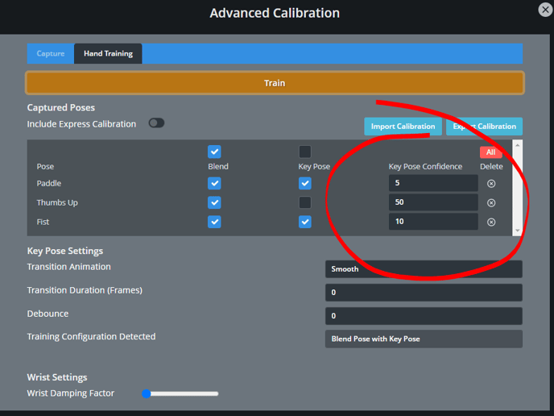
- If you have changed any key poses or key confidence, please click the Train button again to update the calibration.
- All other motions besides the key poses will be based on the blend calibration.
Tuned Express with Key Pose
Tuned Express with Key Pose brings together the power of Tuned Express mode with key poses that will snap into place when the hand is in that pose.
- Perform an Express Calibration
- Open the Advanced Calibration Section
- Capture the poses you wish to use for tuned express and the poses you wish to key.
- Click on the Hand Training tab
- Make sure that "Include Express Calibration" is switched on
- Select the poses in the Blend column you wish to use to improve the express calibration (Tuned Express)
- Select the poses in the Key Pose column you wish to have the hand snap into.
- Adjust the key confidence as required.
- Refer to the Key Pose Settings section for further customization.
- Click on 'Train' to apply your changes.
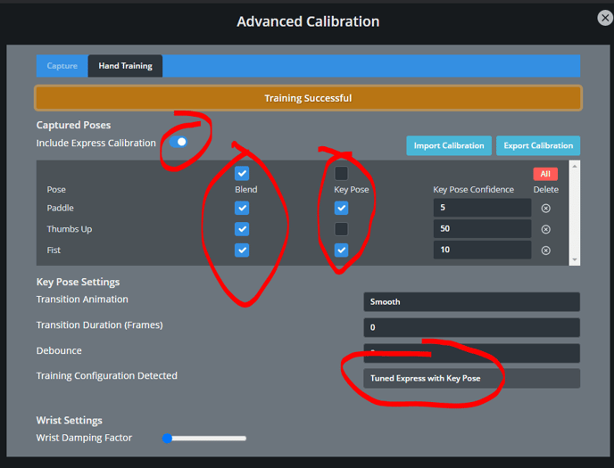
Key Pose Settings
The Key Pose Settings feature is designed to make the transition into your selected key poses feel more natural and personalized to your preferences.
- Transition Animation
- Smooth - Slow in, slow out transition.
- Linear - Linear transition.
- Ease Inc - Fast in, slow out transition.
- Ease Out - Slow in, fast out transition
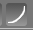
- Transition Duration (Frames)
This setting determines the number of frames it takes for the hand animation to transition from the current pose to the target pose. Increasing the number of frames will enhance the smoothness of the transition.
- Debounce (Frames)
This setting determines the number of consecutive frames that the Key Pose mode must detect when performing a new pose before the hand animation updates to the target pose.
This mode is primarily used when a significant number of Key poses are selected to prevent the hand animation from quickly snapping into unintended poses.
Wrist Settings
The Wrist Damping Factor sliding bar is used to reduce the influence of the glove sensors on finger animation when the wrist movements are more extreme. This helps to maintain the accuracy of the hand animation while preserving the current finger positions.
CAUTION! - Setting the Wrist Damping sliding bar too high can potentially affect the fluidity of finger motion. It is crucial to find an appropriate setting based on the desired action and adjust it as necessary.
6. Creating Custom Poses
-
Navigate to Windows - > Pose Editor.
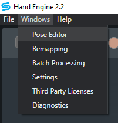
-
To create your custom pose you will have to select a base pose as a starting point. In this example, we will select Paddle from the Basic Pose Library.
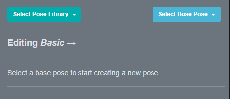
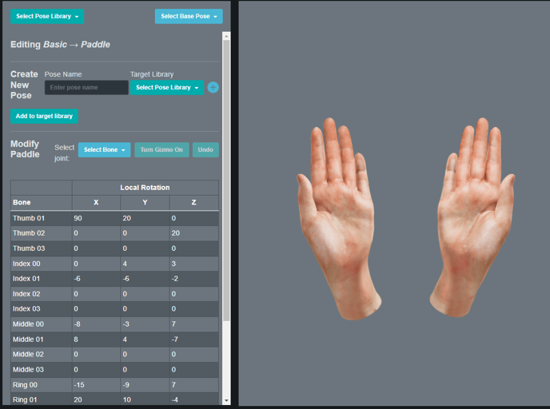
-
Type in your custom pose name in the name box and choose either create a new Pose Library (click on the + button) or add it to an existing one (select from the dropdown). In this example, we will create a custom library.
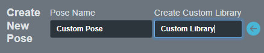
-
In the Modify Custom pose section you can select the join you would like to edit, then you can either use the gizmo or update the bone rotation numbers.
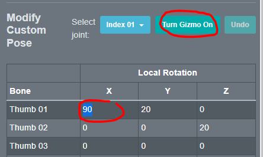
Refer to the below map
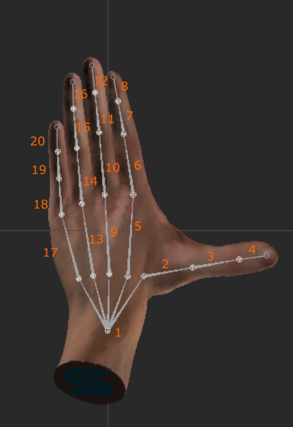
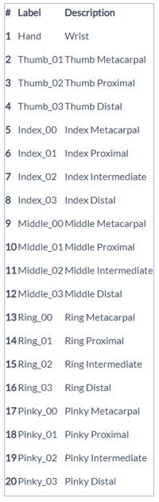
-
Once you are finished creating your custom pose, click on 'Add to Target Library.
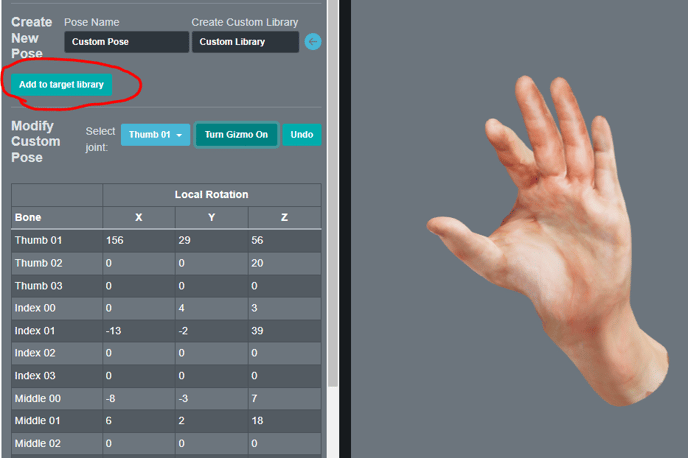
-
Now you will be able to add the pose to your calibration in the Advanced Calibration Window
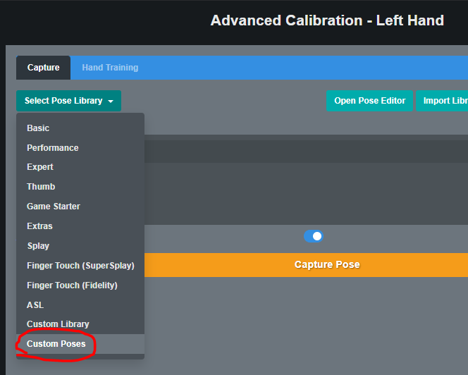
Tip:
In the Pose Editor window, you can left-click the hand view to move the camera angle, scroll for zoom, and right-click to move the camera position.